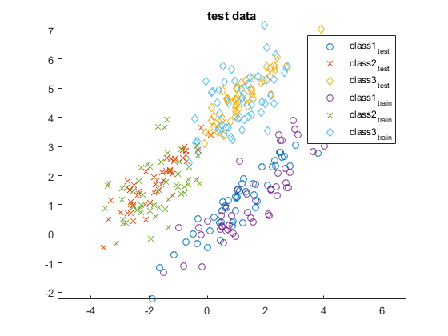
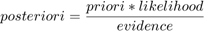

Contents
% o naive bayes classifier é um classsificador baseado em probabilidades que, assume que todas as features são independetes % entre si, sendo possivel % % % é altamente escalável send que o número de parametros de teste é linear com o número de feature necessarias % % % close all clear load data1; k=1; j=1; m=1; for i=1:length(ytest) switch ytest(i); case 1 X_1(:,k) = xtest(:,i); k=k+1; case 2 X_2(:,j) = xtest(:,i); j=j+1; case 3 X_3 (:,m)= xtest(:,i); m=m+1; end end k=1; j=1; m=1; for i=1:length(ytrain) switch ytrain(i); case 1 X_1r(:,k) = xtrain(:,i); k=k+1; case 2 X_2r(:,j) = xtrain(:,i); j=j+1; case 3 X_3r (:,m)= xtrain(:,i); m=m+1; end end figure hold on scatter (X_1(1,:),X_1(2,:)) scatter (X_2(1,:),X_2(2,:),'X') scatter (X_3(1,:),X_3(2,:), 'd') scatter (X_1r(1,:),X_1r(2,:)) scatter (X_2r(1,:),X_2r(2,:),'X') scatter (X_3r(1,:),X_3r(2,:), 'd') title('test data') axis equal legend('class1_{test}','class2_{test}','class3_{test}','class1_{train}','class2_{train}','class3_{train}')
script pedido
naive bayes classifier nao usando toolboxes do matlab para este modelo
% primeiro vamos descobrir qual a probabilidade da cada classe close all clear load data1; k=1; j=1; m=1; for i=1:length(ytest) switch ytest(i); case 1 X_1(:,k) = xtest(:,i); k=k+1; case 2 X_2(:,j) = xtest(:,i); j=j+1; case 3 X_3 (:,m)= xtest(:,i); m=m+1; end end % no vectres X_i estão os elementos de teste que pertecem à classe i P_1 = length(X_1)/length(ytest); P_2 = length(X_2)/length(ytest); P_3 = length(X_3)/length(ytest); % podemos verificae que são equiprováveis tendo cada um dele 1/3 de % probabilidade
% o nosso objectivo é, dado um elemento após aplicado ao classificador este % dá como o resultado a classe a que o elemento pertence % ou seja temos de calcula as probabilidades à posteriori e % consequentemente à priori.
 likelihood = P(C_i) probability of class i como já vimos vai ser igual para todas as classes por isso podemos ignorar este termo a evidence também será igual para todos os casos logo apenas teremos de calcular a probabilidade apriori de um classe dado um elemento neste caso parece que temos
% para um dado elemento X = x1,x2 a sua classe será definida por : %max {P(Y_1|X),P(Y_2|X),P(Y_3|X)} <=> max {P(X|Y_1),P(X|Y_2),P(X|Y_3)} % onde P(X|Y_i) = P(x1|Y_i) * P(x2|Y_i) aqui é aplicado o naive bayes % classificator que assume que as feature são independentes % vamos usar distribuição gaussiana por isso precisamos da variacia e % desvio padrão %slide 24 http://www.cs.cmu.edu/~guestrin/Class/10701-S06/Slides/naivebayes-logisticregression.pdf % %this prob better http://cs229.stanford.edu/section/gaussians.pdf page 3 %https://stats.stackexchange.com/questions/49521/how-to-find-variance-between-multidimensional-points % mu_1 = [sum(X_1(1,:))/length(X_1) ,sum(X_1(2,:))/length(X_1) ]; %mu_1 = mean(X_1') não estou a por esta opção pq no enunciado parece que %quer que facamos tudo à mão cov = (1/(length(X_1)+1)) * (X_1(1,:)-mu_1(1)) * (X_1(2,:)-mu_1(2))'; var_1 = (1/length(X_1)) * (sum((X_1(1,:)-mu_1(1)).^2)) ; var_2 = (1/length(X_1)) * (sum((X_1(2,:)-mu_1(2)).^2)) ; % R matrix 2 by 2 [var(x1) , cov(x1,x2) ; cov (x2,x1) , var (x2)] sigma_1 = [var_1 ,cov ; cov, var_2]; mu_2 = [sum(X_2(1,:))/length(X_2) ,sum(X_2(2,:))/length(X_2) ]; cov = (1/(length(X_2)+1)) * (X_2(1,:)-mu_2(1)) * (X_2(2,:)-mu_2(2))'; var_1 = (1/length(X_2)) * (sum((X_2(1,:)-mu_2(1)).^2)) ; var_2 = (1/length(X_2)) * (sum((X_2(2,:)-mu_2(2)).^2)) ; sigma_2 = [var_1 ,cov ; cov, var_2]; mu_3 = [sum(X_3(1,:))/length(X_3) ,sum(X_3(2,:))/length(X_3) ]; cov = (1/(length(X_3)+1)) * (X_3(1,:)-mu_3(1)) * (X_3(2,:)-mu_3(2))'; var_1 = (1/length(X_3)) * (sum((X_3(1,:)-mu_3(1)).^2)) ; var_2 = (1/length(X_3)) * (sum((X_3(2,:)-mu_3(2)).^2)) ; sigma_3 = [var_1 ,cov ; cov, var_2]; %podemos mais ou menos ver que os valores do 1 são maiores mas iso é devido %ao conjunto dos 1 estar mais espalhado pelo mundo %funcão do matlab para multiplas dimensões %exemplo mvnpdf(xtest(:,1),mu_3',sigma_3); y_res = zeros(1,length(xtrain)); for i =1:length(xtrain) [num ,y_res(i)] = max(mvnpdf(xteste(:,i),mu_1',sigma_1), mvnpdf(xteste(:,i),mu_2',sigma_2),mvnpdf(xteste(:,i),mu_3',sigma_3)); end
Undefined variable xteste.
Error in lab (line 186)
[num ,y_res(i)] = max(mvnpdf(xteste(:,i),mu_1',sigma_1), mvnpdf(xteste(:,i),mu_2',sigma_2),mvnpdf(xteste(:,i),mu_3',sigma_3));